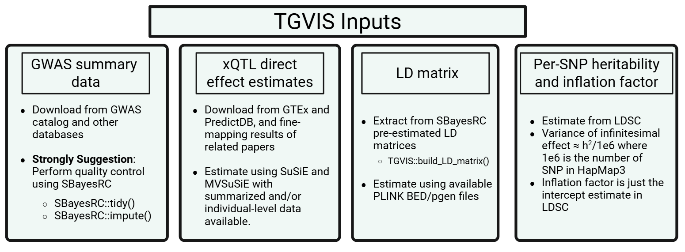

Data Preparation
Data Preparation.Rmd
Input 1: GWAS summary data for TGVIS
This section describes how to prepare GWAS summary statistics and LD reference panels for TGVIS analysis. TGVIS requires GWAS summary-level data for a single locus as its in the first input. We strongly recommend performing quality control using SBayesRC prior to running TGVIS. Although SBayesRC is primarily designed for polygenic prediction using functional annotations and high-density SNPs (>7 million), its two quality control functions are highly effective for preprocessing GWAS summary data.
Input Format: GWAS Summary Statistics
The input mafile must follow the COJO format:
| SNP | A1 | A2 | freq | b | se | p | N |
|---|---|---|---|---|---|---|---|
| rs1001 | A | G | 0.8493 | 0.0024 | 0.0055 | 0.6653 | 129850 |
| rs1002 | C | G | 0.0306 | 0.0034 | 0.0115 | 0.7659 | 129799 |
| rs1003 | A | C | 0.5128 | 0.0045 | 0.0038 | 0.2319 | 129830 |
LD Reference Panel
The LDdir should contain precomputed eigen-decomposition
files for each LD block. We provide links to the SBayesRC LD panels for
multiple ancestries and SNP sets: EUR,
EAS,
and AFR
We suggest installing this version of SBayesRC, because in our tests, the current version is incompatible with the BH R package and cannot be installed properly.
Input 2: xQTL direct effect sizes
The second input to TGVIS is the weights of xQTL effect size (also known as direct effects). These are not marginal effects; instead, they represent the direct causal effect of each xQTL on gene expression or splicing, estimated while accounting for the LD matrix of nearby tagged variants.
We strongly recommend using precomputed weights from official sources, which are generally derived from individual-level data and thus more reliable than fine-mapping from summary statistics: GTEx v10 SuSiE eQTL weights and PredictDB. These weights are typically estimated using fine-mapping methods such as SuSiE on individual-level genotype and expression data.
Input 3: LD Matrix
We strongly recommend using the LD matrices provided by SBayesRC as input to TGVIS. We have implemented a function to construct the required LD matrix:
build_LD_matrix(GWAS_Locus, ldDir = "path/to/ld_folder", snpinfo)GWAS_Locus: A data frame containing GWAS summary data for a single locus (we recommend fewer than 10,000 SNPs to avoid memory issues).
ldDir: Path to the directory containing SBayesRC precomputed LD blocks.
snpinfo: SNP annotation information, included in the ancestry-specific LD matrices provided by SBayesRC.
Input 4: Per-SNP Heritability and Inflation Factor
The original TGVIS and SuSiE-inf estimate an infinitesimal effect at the current locus, with its variance estimated via REML. Motivated by works from Dr. Can Yang’s group, including MR-APSS and XMAP, we note that the variance of the infinitesimal effect can be more robustly estimated genome-wide using LDSC, rather than locus-specific estimation. Dr. Yang also pointed out that for most GWAS, the variance of Z-scores is not 1, but inflated due to uncontrolled confounders. This inflation factor is precisely the intercept estimated by LDSC.
We have developed an R package ldscR, which includes
ancestry-specific LDSC weights derived from LD matrices prodivded by
PRS-CSX (UK Biobank).
Usage is as follows:
devtools::install_github("harryyiheyang/ldscR")
ldscR::ldsc.univ(gwas = GWAS_Locus,LDSC = Hapmap3_EURLDSC,sampling.time = 0)
# setting sampling.time = 0 disables standard error estimation via blockwise bootstrap.In addition, empirical observations show that total heritability typically ranges between 0.1 and 0.3 across traits. Hence, a robust default is to set: per-SNP heritability = 0.2 / 7.35e6 and inflation factor = 1.1 (slightly larger than 1).